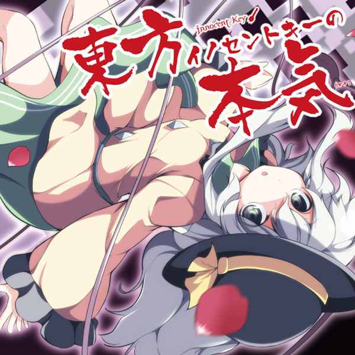
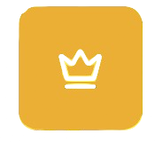

About Me
Haiii! I'm opieferd, a 17 year old developer who loves coding and hardware! I've been exploring programming, having the most experience with Python, JavaScript, and R. I've built Discord bots, many hardware projects, games, and some websites.
I'm currently a senior in highschool with plans for Computer Engineering in college. I love cats and anything cute! Feel free to reach out if you're ever in need of a friend, I'm always here. Live the fourth! (iykyk)
Languages & Skills
Find me on
Support Me
Play a game
A wiki powered food guess game
Guess the Food →
らぶっちゅ☆CHIREIDEN - Innocent Key
#EBAF36 · Opie Orange